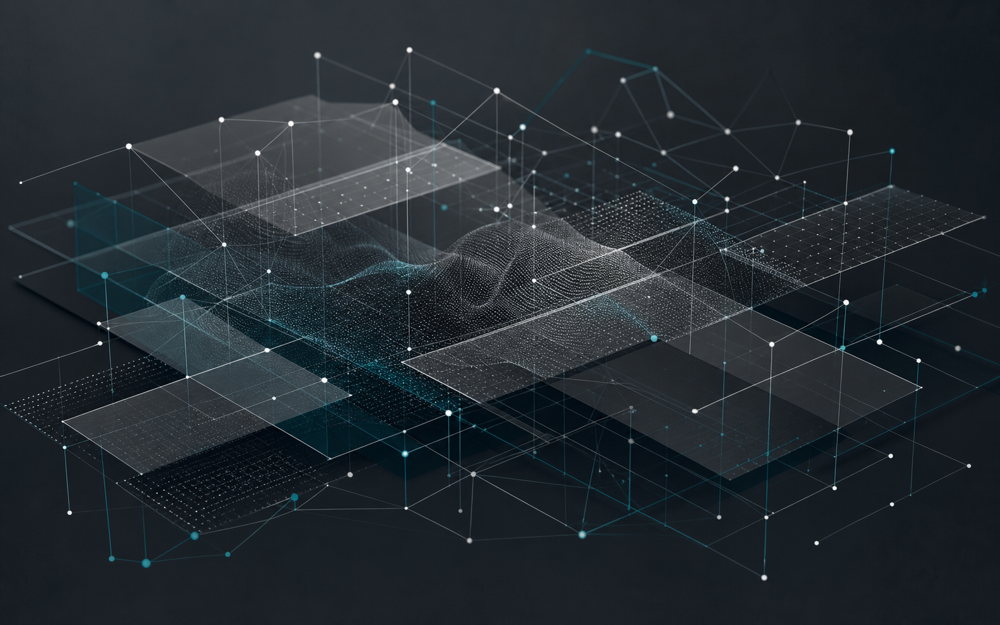

PROJECT TYPE
Corporate Website Renewal
브랜드 포지셔닝과 서비스 이해도를 높이는 기업 홈페이지 구축
온라인 평판과 여론 리스크를 분석하고, 브랜드가 신뢰를 지킬 수 있는 대응 구조를 설계하는 COADS 웹사이트 프로젝트입니다.
01 / PROJECT OVERVIEW
디지털 환경 속 평판 리스크를 다루는 전문 기업의 브랜드 웹사이트를 기획하고 디자인, 개발했습니다.
COADS는 복잡한 온라인 이슈를 빠르게 파악하고, 데이터 기반의 대응 방향을 제시하는 디지털 리스크 인텔리전스 브랜드입니다.
브랜드 포지셔닝과 서비스 이해도를 높이는 기업 홈페이지 구축
정보 구조, 비주얼 시스템, 인터랙션, 반응형 구현 전반 담당
신뢰감 있는 정보 전달과 과하지 않은 움직임의 균형
서비스와 대응 프로세스를 명확하게 이해시키는 경험 설계
02 / BACKGROUND & GOAL
리스크 관리 서비스는 전문성이 높아 자칫 어렵고 폐쇄적으로 보일 수 있습니다.
03 / TARGET
리스크가 곧 브랜드 가치에 영향을 미치는 의사결정자와 실무자를 주요 사용자로 설정했습니다.
법무법인, 병원, 엔터테인먼트, 소비자 브랜드 등 온라인 이슈에 민감하고 신속한 판단이 필요한 기업
현재 어떤 상황인지, 왜 대응해야 하는지 즉시 이해할 수 있어야 합니다.
과장된 보안 이미지를 피하고 정제된 정보 구조로 역량을 보여 줍니다.
서비스 탐색 후 상담과 문의로 자연스럽게 이어지는 흐름을 설계합니다.
04 / BRAND STRATEGY
브랜드 메시지를 구성하는 언어, 색상, 타이포그래피를 하나의 원칙으로 정리했습니다.
BRAND MESSAGE
Read the risk.COLOR SYSTEM
TYPOGRAPHY
TONE & MANNER
Quiet confidence.05 / INFORMATION ARCHITECTURE
방문자가 브랜드의 목적부터 서비스, 솔루션, 문의까지 점진적으로 확신을 얻도록 구성했습니다.
브랜드가 해결하는 문제와 핵심 관점
리스크를 관리하는 4가지 서비스
상황에 따른 구체적 대응 구조
06 / VISUAL DIRECTION
검은 배경과 절제된 블루를 기반으로, 카드보다 넓은 에디토리얼 구성을 우선했습니다.

흑백 대비로 정보의 위계를 선명하게 만듭니다.
핵심 메시지와 인터랙션에만 블루를 사용합니다.
여백과 큰 타이포그래피로 프리미엄 인상을 만듭니다.
07 / INTERACTION DESIGN
움직임을 장식으로 사용하지 않고, 정보의 등장 순서와 집중도를 제어하는 장치로 사용했습니다.
WHY COADS, OUR SERVICES, OUR SOLUTIONS와 같은 핵심 섹션명을 진입 시 크게 노출하고 다음 콘텐츠로 전환합니다.
행에 마우스를 올리면 해당 서비스 이미지가 부드럽게 전환되며, 일부 항목은 확장 후 영상이 재생됩니다.
활성 카드에 집중시키고 이전 카드는 주변에 흐릿하게 남겨 과정의 연결감을 유지합니다.
움직임 최소화 환경에서는 애니메이션을 축소하고, 모바일에서는 콘텐츠 우선의 일반 흐름으로 재배치했습니다.
08 / RESPONSIVE & DEVELOPMENT
데스크톱의 몰입형 연출을 유지하면서도 모바일에서는 읽기와 탐색이 우선되는 구조로 전환했습니다.
09 / EXPECTED OUTCOME
브랜드의 신뢰도를 높이고 서비스의 이해와 전환을 동시에 개선하는 것을 목표로 했습니다.
COADS가 제공하는 탐지, 분석, 대응, 평판 관리의 흐름을 직관적으로 설명하여 복잡한 리스크 관리 서비스를 이해하기 쉬운 브랜드 경험으로 전환합니다.
단순 모니터링 업체가 아닌 전략적 리스크 파트너로 인식
웹 전반의 타이포, 컬러, 모션을 하나의 언어로 통일
콘텐츠 탐색 이후 FAQ와 문의로 이어지는 자연스러운 동선
10 / PROJECT REVIEW
COADS 프로젝트는 전문적인 디지털 리스크 관리 서비스를 어렵지 않게 전달하기 위해, 브랜드 전략과 인터랙션 디자인, 반응형 구현을 하나의 경험으로 연결한 웹 포트폴리오 프로젝트입니다.
COADS / WEB DESIGN & DEVELOPMENT PORTFOLIO